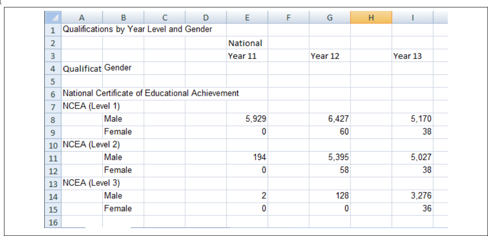
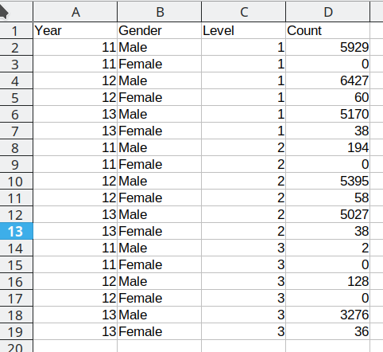
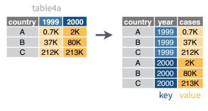
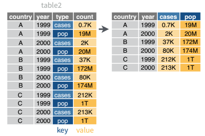
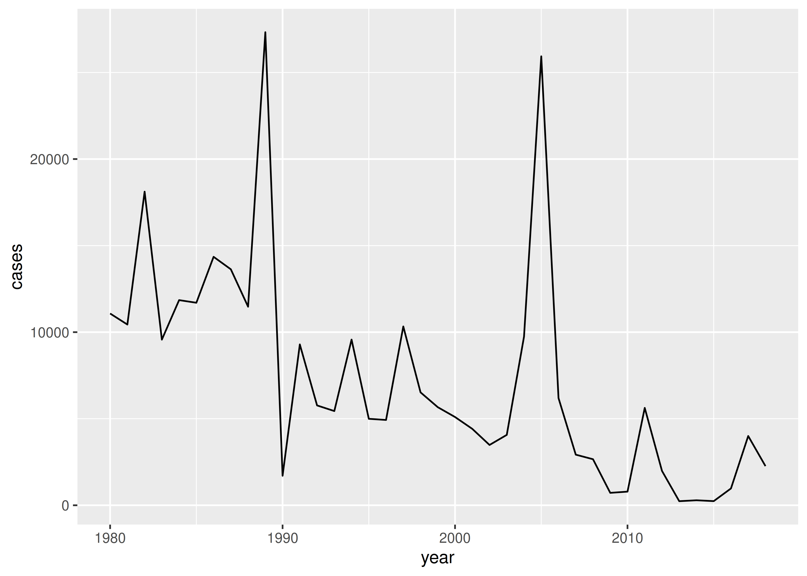
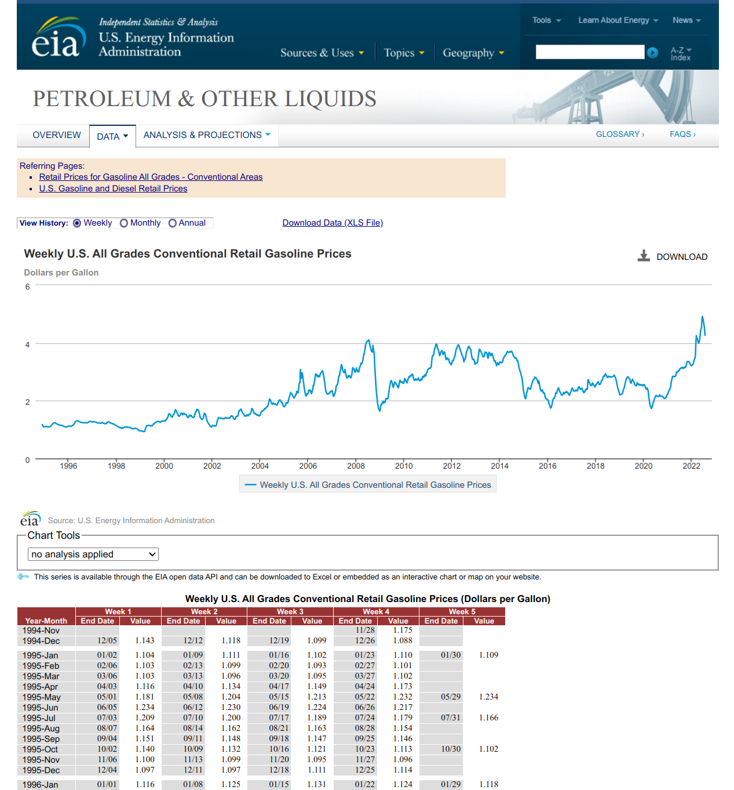

| country | year | cases | population |
|---|---|---|---|
| Afghanistan | 1999 | 745 | 19987071 |
| Afghanistan | 2000 | 2666 | 20595360 |
| Brazil | 1999 | 37737 | 172006362 |
| Brazil | 2000 | 80488 | 174504898 |
| China | 1999 | 212258 | 1272915272 |
| China | 2000 | 213766 | 1280428583 |
24 Reshaping Data
24.1 Objectives
Broadly, your objective while reading this chapter is to be able to identify datasets which have “messy” formats and determine a sequence of operations to transition the data into “tidy” format. To do this, you should be master the following concepts:
- Determine what data format is necessary to generate a desired plot or statistical model
- Understand the differences between “wide” and “long” format data and how to transition between the two structures
24.2 Tidy and Messy Data
24.2.1 Motivating Example
Consider the spreadsheet screenshot in Figure 24.1.

This spreadsheet shows New Zealand High School certificate achievement levels for a boys-only school. Typically, students would get level 1 in year 11, level 2 in year 12, and level 3 in year 13, but it is possible for students to gain multiple levels in a single year. This data is organized to show the number of students gaining each type of certification (broken out by gender) across each of the 3 years. There are many blank cells that provide ample space to see the data, and all of the necessary variables are represented: there are essentially three 2x3 tables showing the number of students attaining each NCEA level in each year of school. If all of the information is present in this table, is there really a problem? Perhaps not if the goal is just to display the data, but analyzing this data effectively, or plotting it in a way that is useful, requires some restructuring. Figure 24.2 shows a restructured version of this data in a more compact rectangular format.

In Figure 24.2, each column contains one variable: Year, gender, level, and total number of students. Each row contains one observation. We still have 18 data points, but this format is optimized for statistical analysis, rather than to display for (human) visual consumption. We will refer to this restructured data as “tidy” data: it has a single column for each variable and a single row for each observation.
24.2.2 Defining Tidy data
The illustrations below are lifted from an excellent blog post [2] about tidy data; they’re reproduced here because
- they’re beautiful and licensed as CCA-4.0-by, and
- they might be more memorable than the equivalent paragraphs of text without illustration.
Most of the time, data does not come in a format suitable for analysis. Spreadsheets are generally optimized for data entry or viewing, rather than for statistical analysis:
- Tables may be laid out for easy data entry, so that there are multiple observations in a single row
- It may be visually preferable to arrange columns of data to show multiple times or categories on the same row for easy comparison
When we analyze data, however, we care much more about the fundamental structure of observations: discrete units of data collection. Each observation may have several corresponding variables that may be measured simultaneously, but fundamentally each discrete data point is what we are interested in analyzing.
The structure of tidy data reflects this preference for keeping the data in a fundamental form: each observation is in its own row, any observed variables are in single columns. This format is inherently rectangular, which is also important for statistical analysis - our methods are typically designed to work with matrices of data.

![There are two sets of anthropomorphized data tables. The top group of three tables are all rectangular and smiling, with a shared speech bubble reading “our columns are variables and our rows are observations!”. Text to the left of that group reads “The standard structure of tidy data means that “tidy datasets are all alike…” The lower group of four tables are all different shapes, look ragged and concerned, and have different speech bubbles reading (from left to right) “my column are values and my rows are variables”, “I have variables in columns AND in rows”, “I have multiple variables in a single column”, and “I don’t even KNOW what my deal is.” Next to the frazzled data tables is text “...but every messy dataset is messy in its own way. -Hadley Wickham.”](../images/wrangling/tidydata_2.jpg)
The preference for tidy data has several practical implications: it is easier to reuse code on tidy data, allowing for analysis using a standardized set of tools (rather than having to build a custom tool for each data analysis job).
![On the left is a happy cute fuzzy monster holding a rectangular data frame with a tool that fits the data frame shape. On the workbench behind the monster are other data frames of similar rectangular shape, and neatly arranged tools that also look like they would fit those data frames. The workbench looks uncluttered and tidy. The text above the tidy workbench reads “When working with tidy data, we can use the same tools in similar ways for different datasets…” On the right is a cute monster looking very frustrated, using duct tape and other tools to haphazardly tie data tables together, each in a different way. The monster is in front of a messy, cluttered workbench. The text above the frustrated monster reads “...but working with untidy data often means reinventing the wheel with one-time approaches that are hard to iterate or reuse.”](../images/wrangling/tidydata_3.jpg)
In addition, standardized tools for data analysis means that it is easier to collaborate with others: if everyone starts with the same set of assumptions about the data set, you can borrow methods and tools from a collaborator’s analysis and easily apply them to your own data set.


Examples: Messy Data
These datasets all display the same data: TB cases documented by the WHO in Afghanistan, Brazil, and China, between 1999 and 2000. There are 4 variables: country, year, cases, and population, but each table has a different layout.
Here, each observation is a single row, each variable is a column, and everything is nicely arranged for e.g. regression or statistical analysis. We can easily compute another measure, such as cases per 100,000 population, by taking cases/population * 100000 (this would define a new column).
| country | year | type | count |
|---|---|---|---|
| Afghanistan | 1999 | cases | 745 |
| Afghanistan | 1999 | population | 19987071 |
| Afghanistan | 2000 | cases | 2666 |
| Afghanistan | 2000 | population | 20595360 |
| Brazil | 1999 | cases | 37737 |
| Brazil | 1999 | population | 172006362 |
| Brazil | 2000 | cases | 80488 |
| Brazil | 2000 | population | 174504898 |
| China | 1999 | cases | 212258 |
| China | 1999 | population | 1272915272 |
| China | 2000 | cases | 213766 |
| China | 2000 | population | 1280428583 |
Here, we have 4 columns again, but we now have 12 rows: one of the columns is an indicator of which of two numerical observations is recorded in that row; a second column stores the value. This form of the data is more easily plotted in e.g. ggplot2, if we want to show lines for both cases and population, but computing per capita cases would be much more difficult in this form than in the arrangement in table 1.
| country | year | rate |
|---|---|---|
| Afghanistan | 1999 | 745/19987071 |
| Afghanistan | 2000 | 2666/20595360 |
| Brazil | 1999 | 37737/172006362 |
| Brazil | 2000 | 80488/174504898 |
| China | 1999 | 212258/1272915272 |
| China | 2000 | 213766/1280428583 |
This form has only 3 columns, because the rate variable (which is a character) stores both the case count and the population. We can’t do anything with this format as it stands, because we can’t do math on data stored as characters. However, this form might be easier to read and record for a human being.
| country | 1999 | 2000 |
|---|---|---|
| Afghanistan | 745 | 2666 |
| Brazil | 37737 | 80488 |
| China | 212258 | 213766 |
| country | 1999 | 2000 |
|---|---|---|
| Afghanistan | 19987071 | 20595360 |
| Brazil | 172006362 | 174504898 |
| China | 1272915272 | 1280428583 |
In this form, we have two tables - one for population, and one for cases. Each year’s observations are in a separate column. This format is often found in separate sheets of an excel workbook. To work with this data, we’ll need to transform each table so that there is a column indicating which year an observation is from, and then merge the two tables together by country and year.
| country | century | year | rate |
|---|---|---|---|
| Afghanistan | 19 | 99 | 745/19987071 |
| Afghanistan | 20 | 00 | 2666/20595360 |
| Brazil | 19 | 99 | 37737/172006362 |
| Brazil | 20 | 00 | 80488/174504898 |
| China | 19 | 99 | 212258/1272915272 |
| China | 20 | 00 | 213766/1280428583 |
Table 5 is very similar to table 3, but the year has been separated into two columns - century, and year. This is more common with year, month, and day in separate columns (or date and time in separate columns), often to deal with the fact that spreadsheets don’t always handle dates the way you’d hope they would.
Try it out: Classifying Messy Data
For each of the datasets in the previous example, determine whether each table is tidy. If it is not, identify which rule or rules it violates.
What would you have to do in order to compute a standardized TB infection rate per 100,000 people?
| country | year | cases | population |
|---|---|---|---|
| Afghanistan | 1999 | 745 | 19987071 |
| Afghanistan | 2000 | 2666 | 20595360 |
| Brazil | 1999 | 37737 | 172006362 |
| Brazil | 2000 | 80488 | 174504898 |
| China | 1999 | 212258 | 1272915272 |
| China | 2000 | 213766 | 1280428583 |
This is tidy data. Computing a standardized infection rate is as simple as creating the variable rate = cases/population*100,000.
| country | year | type | count |
|---|---|---|---|
| Afghanistan | 1999 | cases | 745 |
| Afghanistan | 1999 | population | 19987071 |
| Afghanistan | 2000 | cases | 2666 |
| Afghanistan | 2000 | population | 20595360 |
| Brazil | 1999 | cases | 37737 |
| Brazil | 1999 | population | 172006362 |
| Brazil | 2000 | cases | 80488 |
| Brazil | 2000 | population | 174504898 |
| China | 1999 | cases | 212258 |
| China | 1999 | population | 1272915272 |
| China | 2000 | cases | 213766 |
| China | 2000 | population | 1280428583 |
Each variable does not have its own column (so a single year’s observation of one country actually has 2 rows). Computing a standardized infection rate requires moving cases and population so that each variable has its own column, and then you can proceed using the process in 1.
| country | year | rate |
|---|---|---|
| Afghanistan | 1999 | 745/19987071 |
| Afghanistan | 2000 | 2666/20595360 |
| Brazil | 1999 | 37737/172006362 |
| Brazil | 2000 | 80488/174504898 |
| China | 1999 | 212258/1272915272 |
| China | 2000 | 213766/1280428583 |
Each value does not have its own cell (and each variable does not have its own column). In Table 3, you’d have to separate the numerator and denominator of each cell, convert each to a numeric variable, and then you could proceed as in 1.
| country | 1999 | 2000 |
|---|---|---|
| Afghanistan | 745 | 2666 |
| Brazil | 37737 | 80488 |
| China | 212258 | 213766 |
| country | 1999 | 2000 |
|---|---|---|
| Afghanistan | 19987071 | 20595360 |
| Brazil | 172006362 | 174504898 |
| China | 1272915272 | 1280428583 |
There are multiple observations in each row because there is not a column for year. To compute the rate, you’d need to “stack” the two columns in each table into a single column, add a year column that is 1999, 1999, 1999, 2000, 2000, 2000, and then merge the two tables. Then you could proceed as in 1.
| country | century | year | rate |
|---|---|---|---|
| Afghanistan | 19 | 99 | 745/19987071 |
| Afghanistan | 20 | 00 | 2666/20595360 |
| Brazil | 19 | 99 | 37737/172006362 |
| Brazil | 20 | 00 | 80488/174504898 |
| China | 19 | 99 | 212258/1272915272 |
| China | 20 | 00 | 213766/1280428583 |
Each variable does not have its own column (there are two columns for year, in addition to the issues noted in table3). Computing the rate would be similar to table 3; the year issues aren’t actually a huge deal unless you plot them, at which point 99 will seem to be bigger than 00 (so you’d need to combine the two year columns together first).
It is actually impossible to have a table that violates only one of the rules of tidy data - you have to violate at least two. So a simpler way to state the rules might be:
- Each data set goes into its own table (or tibble, if you are using R)
- Each variable gets its own column
24.3 Additional reading
[3] - IBM SPSS ad that talks about the perils of spreadsheets
[4] - assembled news stories involving spreadsheet mishaps
You have learned some of the skills to tidy data in Chapter 23, and you’ll learn more in Chapter 25, but by the end of this chapter you will have many of the skills needed to wrangle the most common “messy” data sets into “tidy” form.
24.4 Pivot operations
It’s fairly common for data to come in forms which are convenient for either human viewing or data entry. Unfortunately, these forms aren’t necessarily the most friendly for analysis.

{kind=link}
The two operations we’ll learn here are wide -> long and long -> wide.

{kind=link}
This animation uses the R functions pivot_wider() and pivot_longer() Animation source, but the concept is the same in both R and python.
24.4.1 Longer
In many cases, the data come in what we might call “wide” form - some of the column names are not names of variables, but instead, are themselves values of another variable.
Tables 4a and 4b are good examples of data which is in “wide” form and should be in long(er) form: the years, which are variables, are column names, and the values are cases and population respectively.
table4a
## # A tibble: 3 × 3
## country `1999` `2000`
## <chr> <dbl> <dbl>
## 1 Afghanistan 745 2666
## 2 Brazil 37737 80488
## 3 China 212258 213766
table4b
## # A tibble: 3 × 3
## country `1999` `2000`
## <chr> <dbl> <dbl>
## 1 Afghanistan 19987071 20595360
## 2 Brazil 172006362 174504898
## 3 China 1272915272 1280428583The solution to this is to rearrange the data into “long form”: to take the columns which contain values and “stack” them, adding a variable to indicate which column each value came from. To do this, we have to duplicate the values in any column which isn’t being stacked (e.g. country, in both the example above and the image below).

Once our data are in long form, we can (if necessary) separate values that once served as column labels into actual variables, and we’ll have tidy(er) data.
tba <- table4a %>%
pivot_longer(-country, names_to = "year", values_to = "cases")
tbb <- table4b %>%
pivot_longer(-country, names_to = "year", values_to = "population")
# To get the tidy data, we join the two together (see Table joins below)
left_join(tba, tbb, by = c("country", "year")) %>%
# make year numeric b/c it's dumb not to
mutate(year = as.numeric(year))
## # A tibble: 6 × 4
## country year cases population
## <chr> <dbl> <dbl> <dbl>
## 1 Afghanistan 1999 745 19987071
## 2 Afghanistan 2000 2666 20595360
## 3 Brazil 1999 37737 172006362
## 4 Brazil 2000 80488 174504898
## 5 China 1999 212258 1272915272
## 6 China 2000 213766 1280428583The columns are moved to a variable with the name passed to the argument “names_to” (hopefully, that is easy to remember), and the values are moved to a variable with the name passed to the argument “values_to” (again, hopefully easy to remember).
We identify ID variables (variables which we don’t want to pivot) by not including them in the pivot statement. We can do this in one of two ways:
- select only variables we want to pivot:
pivot_longer(table4a, cols =1999:2000, names_to = "year", values_to = "cases") - select variables we don’t want to pivot, using
-to remove them. (see above, where-countryexcludes country from the pivot operation)
Which option is easier depends how many things you’re pivoting (and how the columns are structured).
If we wanted to avoid the table join, we could do this process another way: first, we would add a column to each tibble called id with values “cases” and “population” respectively. Then, we could bind the two tables together by row (so stack them on top of each other). We could then do a wide-to-long pivot, followed by a long-to-wide pivot to get our data into tidy form.
# Create ID columns
table4a.x <- table4a %>% mutate(id = "cases")
table4b.x <- table4b %>% mutate(id = "population")
# Create one table
table4 <- bind_rows(table4a.x, table4b.x)
table4_long <- table4 %>%
# rearrange columns
select(country, id, `1999`, `2000`) %>%
# Don't pivot country or id
pivot_longer(-c(country:id), names_to = "year", values_to = "count")
# Intermediate fully-long form
table4_long
## # A tibble: 12 × 4
## country id year count
## <chr> <chr> <chr> <dbl>
## 1 Afghanistan cases 1999 745
## 2 Afghanistan cases 2000 2666
## 3 Brazil cases 1999 37737
## 4 Brazil cases 2000 80488
## 5 China cases 1999 212258
## 6 China cases 2000 213766
## 7 Afghanistan population 1999 19987071
## 8 Afghanistan population 2000 20595360
## 9 Brazil population 1999 172006362
## 10 Brazil population 2000 174504898
## 11 China population 1999 1272915272
## 12 China population 2000 1280428583
# make wider, with case and population columns
table4_tidy <- table4_long %>%
pivot_wider(names_from = id, values_from = count)
table4_tidy
## # A tibble: 6 × 4
## country year cases population
## <chr> <chr> <dbl> <dbl>
## 1 Afghanistan 1999 745 19987071
## 2 Afghanistan 2000 2666 20595360
## 3 Brazil 1999 37737 172006362
## 4 Brazil 2000 80488 174504898
## 5 China 1999 212258 1272915272
## 6 China 2000 213766 1280428583In Pandas, pandas.melt(...) takes id_vars, value_vars, var_name, and value_name. Otherwise, it functions nearly exactly the same as pivot_longer; the biggest difference is that column selection works differently in python than it does in the tidyverse.
As in R, we can choose to either do a melt/pivot_longer operation on each table and then join the tables together, or we can concatenate the rows and do a melt/pivot_longer operation followed by a pivot/pivot_wider operation.
import pandas as pd
# Get tables from R
table4a = r.table4a
table4b = r.table4b
tba = pd.melt(table4a, id_vars = ['country'], value_vars = ['1999', '2000'], var_name = 'year', value_name = 'cases')
tbb = pd.melt(table4b, id_vars = ['country'], value_vars = ['1999', '2000'], var_name = 'year', value_name = 'population')
# To get the tidy data, we join the two together (see Table joins below)
table4_tidy = pd.merge(tba, tbb, on = ["country", "year"], how = 'left')Here’s the melt/pivot_longer + pivot/pivot_wider version:
import pandas as pd
# Get tables from R
table4a = r.table4a
table4b = r.table4b
table4a['id'] = "cases"
table4b['id'] = "population"
table4 = pd.concat([table4a, table4b])
# Fully long form
table4_long = pd.melt(table4, id_vars = ['country', 'id'], value_vars = ['1999', '2000'], var_name = 'year', value_name = 'count')
# Tidy form - case and population columns
table4_tidy2 = pd.pivot(table4_long, index = ['country', 'year'], columns = ['id'], values = 'count')
# reset_index() gets rid of the grouped index
table4_tidy2.reset_index()
## id country year cases population
## 0 Afghanistan 1999 745.0 1.998707e+07
## 1 Afghanistan 2000 2666.0 2.059536e+07
## 2 Brazil 1999 37737.0 1.720064e+08
## 3 Brazil 2000 80488.0 1.745049e+08
## 4 China 1999 212258.0 1.272915e+09
## 5 China 2000 213766.0 1.280429e+0924.4.2 Wider
While it’s very common to need to transform data into a longer format, it’s not that uncommon to need to do the reverse operation. When an observation is scattered across multiple rows, your data is too long and needs to be made wider again.
Table 2 is an example of a table that is in long format but needs to be converted to a wider layout to be “tidy” - there are separate rows for cases and population, which means that a single observation (one year, one country) has two rows.

table2 %>%
pivot_wider(names_from = type, values_from = count)
## # A tibble: 6 × 4
## country year cases population
## <chr> <dbl> <dbl> <dbl>
## 1 Afghanistan 1999 745 19987071
## 2 Afghanistan 2000 2666 20595360
## 3 Brazil 1999 37737 172006362
## 4 Brazil 2000 80488 174504898
## 5 China 1999 212258 1272915272
## 6 China 2000 213766 1280428583table2 = r.table2
pd.pivot(table2, index = ['country', 'year'], columns = ['type'], values = 'count').reset_index()
## type country year cases population
## 0 Afghanistan 1999.0 745.0 1.998707e+07
## 1 Afghanistan 2000.0 2666.0 2.059536e+07
## 2 Brazil 1999.0 37737.0 1.720064e+08
## 3 Brazil 2000.0 80488.0 1.745049e+08
## 4 China 1999.0 212258.0 1.272915e+09
## 5 China 2000.0 213766.0 1.280429e+09
Try it Out!
In the next section, we’ll be using the WHO surveillance of disease incidence data (link). I originally wrote this using data from 2020, but the WHO has since migrated to a new system and now provides their data in a much tidier long form (Excel link). For demonstration purposes, I’ll continue using the messier 2020 data, but the link is no longer available on the WHO’s site.
It will require some preprocessing before it’s suitable for a demonstration. I’ll do some of it, but in this section, you’re going to do the rest.
You don’t have to understand what this code is doing just yet.
library(readxl)
library(purrr) # This uses the map() function as a replacement for for loops.
# It's pretty sweet
library(tibble)
library(dplyr)
download.file("https://github.com/srvanderplas/datasets/raw/main/raw/2020_WHO_incidence_series.xls", "../data/2020_WHO_incidence_series.xls")
sheets <- excel_sheets("../data/2020_WHO_incidence_series.xls")
sheets <- sheets[-c(1, length(sheets))] # get rid of 1st and last sheet name
# This command says "for each sheet, read in the excel file with that sheet name"
# map_df means paste them all together into a single data frame
disease_incidence <- map_df(sheets, ~read_xls(path ="../data/2020_WHO_incidence_series.xls", sheet = .))
# Alternately, we could write a loop:
disease_incidence2 <- tibble() # Blank data frame
for (i in 1:length(sheets)) {
disease_incidence2 <- bind_rows(
disease_incidence2,
read_xls(path = "../data/2020_WHO_incidence_series.xls", sheet = sheets[i])
)
}
# export for Python (and R, if you want)
readr::write_csv(disease_incidence, file = "../data/2020_who_disease_incidence.csv")Download the exported data here and import it into Python and R. Transform it into long format, so that there is a year column. You should end up with a table that has dimensions of approximately 6 columns and 83,000 rows (or something close to that).
Can you make a line plot of cases of measles in Bangladesh over time?
head(disease_incidence)
## # A tibble: 6 × 43
## WHO_R…¹ ISO_c…² Cname Disease `2018` `2017` `2016` `2015` `2014` `2013` `2012`
## <chr> <chr> <chr> <chr> <dbl> <dbl> <dbl> <dbl> <dbl> <dbl> <dbl>
## 1 EMR AFG Afgh… CRS NA NA NA 0 0 0 NA
## 2 EUR ALB Alba… CRS 0 0 NA NA NA 0 0
## 3 AFR DZA Alge… CRS NA NA 0 0 NA NA 0
## 4 EUR AND Ando… CRS 0 0 0 NA NA 0 0
## 5 AFR AGO Ango… CRS NA NA NA NA NA NA NA
## 6 AMR ATG Anti… CRS 0 0 0 0 0 0 0
## # … with 32 more variables: `2011` <dbl>, `2010` <dbl>, `2009` <dbl>,
## # `2008` <dbl>, `2007` <dbl>, `2006` <dbl>, `2005` <dbl>, `2004` <dbl>,
## # `2003` <dbl>, `2002` <dbl>, `2001` <dbl>, `2000` <dbl>, `1999` <dbl>,
## # `1998` <dbl>, `1997` <dbl>, `1996` <dbl>, `1995` <dbl>, `1994` <dbl>,
## # `1993` <dbl>, `1992` <dbl>, `1991` <dbl>, `1990` <dbl>, `1989` <dbl>,
## # `1988` <dbl>, `1987` <dbl>, `1986` <dbl>, `1985` <dbl>, `1984` <dbl>,
## # `1983` <dbl>, `1982` <dbl>, `1981` <dbl>, `1980` <dbl>, and abbreviated …library(ggplot2)
library(readr)
library(tidyr)
library(stringr)
who_disease <- read_csv("../data/2020_who_disease_incidence.csv", na = ".")
who_disease_long <- who_disease %>%
pivot_longer(matches("\\d{4}"), names_to = "year", values_to = "cases") %>%
rename(Country = Cname) %>%
mutate(Disease = str_replace(Disease, "CRS", "Congenital Rubella"),
year = as.numeric(year),
cases = as.numeric(cases))
filter(who_disease_long, Country == "Bangladesh", Disease == "measles") %>%
ggplot(aes(x = year, y = cases)) + geom_line()
import pandas as pd
from plotnine import *
who_disease = pd.read_csv("../data/2020_who_disease_incidence.csv", na_values = ['NA', 'NaN'])
who_disease_long = pd.melt(who_disease, id_vars = ['WHO_REGION', 'ISO_code', 'Cname', 'Disease'], var_name = 'year', value_name = 'cases')
# Rename cname to country
who_disease_long = who_disease_long.rename(columns={"Cname": "Country"})
who_disease_long.replace("CRS", "Congenital Rubella")
who_disease_long['year'] = pd.to_numeric(who_disease_long['year'])
tmp = who_disease_long.query("Country=='Bangladesh' & Disease == 'measles'")
ggplot(tmp, aes(x = "year", y = "cases")) + geom_line()24.5 Example: Gas Prices Data
The US Energy Information Administration tracks gasoline prices, with data available on a weekly level since late 1994. You can go to this site to see a nice graph of gas prices, along with a corresponding table.

The data in the table is structured in a fairly easy to read form: each row is a month; each week in the month is a set of two columns: one for the date, one for the average gas price. While this data is definitely not tidy, it is readable.
But looking at the chart at the top of the page, it’s not clear how we might get that chart from the data in the format it’s presented here: to get a chart like that, we would need a table where each row was a single date, and there were columns for date and price. That would be tidy form data, and so we have to get from the wide, human-readable form into the long, tidier form that we can graph.
24.5.1 Setup: Gas Price Data Cleaning
For the next example, we’ll read the data in from the HTML table online and work to make it something we could e.g. plot. Before we can start cleaning, we have to read in the data:
| Year-Month | Week 1 | Week 1 | Week 2 | Week 2 | Week 3 | Week 3 | Week 4 | Week 4 | Week 5 | Week 5 |
|---|---|---|---|---|---|---|---|---|---|---|
| Year-Month | End Date | Value | End Date | Value | End Date | Value | End Date | Value | End Date | Value |
| 1994-Nov | 11/28 | 1.175 | ||||||||
| 1994-Dec | 12/05 | 1.143 | 12/12 | 1.118 | 12/19 | 1.099 | 12/26 | 1.088 | ||
| 1995-Jan | 01/02 | 1.104 | 01/09 | 1.111 | 01/16 | 1.102 | 01/23 | 1.110 | 01/30 | 1.109 |
| 1995-Feb | 02/06 | 1.103 | 02/13 | 1.099 | 02/20 | 1.093 | 02/27 | 1.101 |
import pandas as pd
gas_prices_html = pd.read_html("https://www.eia.gov/dnav/pet/hist/LeafHandler.ashx?n=pet&s=emm_epm0u_pte_nus_dpg&f=w")[4]
## Error in py_call_impl(callable, dots$args, dots$keywords): ImportError: lxml not found, please install it## Error in py_call_impl(callable, dots$args, dots$keywords): NameError: name 'gas_prices_html' is not defined
Try it out: Manual Formatting in Excel
An excel spreadsheet of the data as downloaded in January 2023 is available here. Can you manually format the data (or even just the first year or two of data) into a long, skinny format?
What steps are involved?
Copy the year-month column, creating one vertical copy for every set of columns
Move each block of two columns down to the corresponding vertical copy
Delete empty rows
Format dates
Delete empty columns
Try it out: Formatting with Pivot Operations
Can you format the data in a long-skinny format for plotting using pivot operations without any database merges?
Write out a list of steps, and for each step, sketch out what the data frame should look like.
How do your steps compare to the steps you used for the manual approach?
![Step 1: set row names to be more descriptive and remove header row. Step 2: Remove empty columns and pivot to long form, with dates and values in the same column and a description column that indicates what type of data is in the value column. Step 3: separate the week and variable information into different columns, discarding the week label. Step 4: pivot wider, so that date and value information are each in a single column. Step 5: remove rows with no values and create a yyyy-mm-dd format date. Step 6: Convert date and value into appropriate types (date, numeric).](../images/wrangling/gas-prices-steps.png)
library(tidyverse)
library(magrittr) # pipe friendly operations
# Function to clean up column names
# Written as an extra function because it makes the code a lot cleaner
fix_gas_names <- function(x) {
# Add extra header row information
paste(x, c("", rep(c("Date", "Value"), times = 5))) %>%
# trim leading/trailing spaces
str_trim() %>%
# replace characters in names that aren't ok for variables in R
make.names()
}
# Clean up the table a bit
gas_prices_raw <- gas_prices_html %>%
set_names(fix_gas_names(names(.))) %>%
# remove first row that is really an extra header row
filter(Year.Month != "Year-Month") %>%
# get rid of empty rows
filter(Year.Month != "")
head(gas_prices_raw)
## # A tibble: 6 × 11
## Year.Month Week.1.Date Week.…¹ Week.…² Week.…³ Week.…⁴ Week.…⁵ Week.…⁶ Week.…⁷
## <chr> <chr> <chr> <chr> <chr> <chr> <chr> <chr> <chr>
## 1 1994-Nov "" "" "" "" "" "" 11/28 1.175
## 2 1994-Dec "12/05" "1.143" "12/12" "1.118" "12/19" "1.099" 12/26 1.088
## 3 1995-Jan "01/02" "1.104" "01/09" "1.111" "01/16" "1.102" 01/23 1.110
## 4 1995-Feb "02/06" "1.103" "02/13" "1.099" "02/20" "1.093" 02/27 1.101
## 5 1995-Mar "03/06" "1.103" "03/13" "1.096" "03/20" "1.095" 03/27 1.102
## 6 1995-Apr "04/03" "1.116" "04/10" "1.134" "04/17" "1.149" 04/24 1.173
## # … with 2 more variables: Week.5.Date <chr>, Week.5.Value <chr>, and
## # abbreviated variable names ¹Week.1.Value, ²Week.2.Date, ³Week.2.Value,
## # ⁴Week.3.Date, ⁵Week.3.Value, ⁶Week.4.Date, ⁷Week.4.Value# gas_prices_raw <- select(gas_prices_raw, -c(X, Date))
gas_prices_long <- pivot_longer(gas_prices_raw, -Year.Month,
names_to = "variable", values_to = "value")
head(gas_prices_long)
## # A tibble: 6 × 3
## Year.Month variable value
## <chr> <chr> <chr>
## 1 1994-Nov Week.1.Date ""
## 2 1994-Nov Week.1.Value ""
## 3 1994-Nov Week.2.Date ""
## 4 1994-Nov Week.2.Value ""
## 5 1994-Nov Week.3.Date ""
## 6 1994-Nov Week.3.Value ""gas_prices_sep <- separate(gas_prices_long, variable, into = c("extra", "week", "variable"), sep = "\\.") %>%
select(-extra)
head(gas_prices_sep)
## # A tibble: 6 × 4
## Year.Month week variable value
## <chr> <chr> <chr> <chr>
## 1 1994-Nov 1 Date ""
## 2 1994-Nov 1 Value ""
## 3 1994-Nov 2 Date ""
## 4 1994-Nov 2 Value ""
## 5 1994-Nov 3 Date ""
## 6 1994-Nov 3 Value ""gas_prices_wide <- pivot_wider(gas_prices_sep, id_cols = c("Year.Month", "week"), names_from = variable, values_from = value)
head(gas_prices_wide)
## # A tibble: 6 × 4
## Year.Month week Date Value
## <chr> <chr> <chr> <chr>
## 1 1994-Nov 1 "" ""
## 2 1994-Nov 2 "" ""
## 3 1994-Nov 3 "" ""
## 4 1994-Nov 4 "11/28" "1.175"
## 5 1994-Nov 5 "" ""
## 6 1994-Dec 1 "12/05" "1.143"gas_prices_date <- gas_prices_wide %>%
filter(nchar(Value) > 0) %>%
separate(Year.Month, into = c("Year", "Month"), sep = "-") %>%
mutate(Date = paste(Year, Date, sep = "/")) %>%
select(-c(1:3))
head(gas_prices_date)
## # A tibble: 6 × 2
## Date Value
## <chr> <chr>
## 1 1994/11/28 1.175
## 2 1994/12/05 1.143
## 3 1994/12/12 1.118
## 4 1994/12/19 1.099
## 5 1994/12/26 1.088
## 6 1995/01/02 1.104library(lubridate)
gas_prices <- gas_prices_date %>%
mutate(Date = ymd(Date),
Price.per.gallon = as.numeric(Value)) %>%
select(-Value)
head(gas_prices)
## # A tibble: 6 × 2
## Date Price.per.gallon
## <date> <dbl>
## 1 1994-11-28 1.18
## 2 1994-12-05 1.14
## 3 1994-12-12 1.12
## 4 1994-12-19 1.10
## 5 1994-12-26 1.09
## 6 1995-01-02 1.10import numpy as np
def fix_gas_names(x):
xx = pd.Series(x)
# add extra stuff to x
y = ["Date", "Value"]*5
y = ["", *y, "", ""]
names = xx + ' ' + y
names = names.str.strip()
names = names.str.replace(" ", ".")
return list(names)
gas_prices_raw = gas_prices_html.copy()
# What do column names look like?
## Error in py_call_impl(callable, dots$args, dots$keywords): NameError: name 'gas_prices_html' is not defined
gas_prices_raw.columns # Multi-Index
# (https://stackoverflow.com/questions/25189575/pandas-dataframe-select-columns-in-multiindex)
## Error in py_call_impl(callable, dots$args, dots$keywords): NameError: name 'gas_prices_raw' is not defined
colnames = fix_gas_names(gas_prices_raw.columns.get_level_values(0))
## Error in py_call_impl(callable, dots$args, dots$keywords): NameError: name 'gas_prices_raw' is not defined
colnames
# Set new column names
## Error in py_call_impl(callable, dots$args, dots$keywords): NameError: name 'colnames' is not defined
gas_prices_raw.columns = colnames
# Drop any rows with NaN in Year-Month
## Error in py_call_impl(callable, dots$args, dots$keywords): NameError: name 'colnames' is not defined
gas_prices_raw = gas_prices_raw.dropna(axis = 0, subset = ['Year-Month'])
# Drop extra columns on the end
## Error in py_call_impl(callable, dots$args, dots$keywords): NameError: name 'gas_prices_raw' is not defined
gas_prices_raw = gas_prices_raw.iloc[:,0:11]
## Error in py_call_impl(callable, dots$args, dots$keywords): NameError: name 'gas_prices_raw' is not defined
gas_prices_raw.head()
## Error in py_call_impl(callable, dots$args, dots$keywords): NameError: name 'gas_prices_raw' is not definedgas_prices_long = pd.melt(gas_prices_raw, id_vars = 'Year-Month', var_name = 'variable')
## Error in py_call_impl(callable, dots$args, dots$keywords): NameError: name 'gas_prices_raw' is not defined
gas_prices_long.head()
## Error in py_call_impl(callable, dots$args, dots$keywords): NameError: name 'gas_prices_long' is not definedgas_prices_sep = gas_prices_long
## Error in py_call_impl(callable, dots$args, dots$keywords): NameError: name 'gas_prices_long' is not defined
gas_prices_sep[["extra", "week", "variable"]] = gas_prices_sep.variable.str.split(r'\.', expand = True)
## Error in py_call_impl(callable, dots$args, dots$keywords): NameError: name 'gas_prices_sep' is not defined
gas_prices_sep = gas_prices_sep.drop('extra', axis = 1)
## Error in py_call_impl(callable, dots$args, dots$keywords): NameError: name 'gas_prices_sep' is not defined
gas_prices_sep.head()
## Error in py_call_impl(callable, dots$args, dots$keywords): NameError: name 'gas_prices_sep' is not definedgas_prices_wide = pd.pivot(gas_prices_sep, index=['Year-Month', 'week'], columns = 'variable', values = 'value')
## Error in py_call_impl(callable, dots$args, dots$keywords): NameError: name 'gas_prices_sep' is not defined
gas_prices_wide.head()
## Error in py_call_impl(callable, dots$args, dots$keywords): NameError: name 'gas_prices_wide' is not definedgas_prices_date = gas_prices_wide.dropna(axis = 0, subset = ['Date', 'Value']).reset_index()
## Error in py_call_impl(callable, dots$args, dots$keywords): NameError: name 'gas_prices_wide' is not defined
gas_prices_date[['Year', 'Month']] = gas_prices_date['Year-Month'].str.split(r'-', expand = True)
## Error in py_call_impl(callable, dots$args, dots$keywords): NameError: name 'gas_prices_date' is not defined
gas_prices_date['Date'] = gas_prices_date.Year + '/' + gas_prices_date.Date
## Error in py_call_impl(callable, dots$args, dots$keywords): NameError: name 'gas_prices_date' is not defined
gas_prices_date['Date'] = pd.to_datetime(gas_prices_date.Date)
## Error in py_call_impl(callable, dots$args, dots$keywords): NameError: name 'gas_prices_date' is not defined
gas_prices_date.head()
## Error in py_call_impl(callable, dots$args, dots$keywords): NameError: name 'gas_prices_date' is not defined
gas_prices = gas_prices_date.drop(["Year-Month", "Year", "Month", "week"], axis = 1)
## Error in py_call_impl(callable, dots$args, dots$keywords): NameError: name 'gas_prices_date' is not defined
gas_prices['Price_per_gallon'] = gas_prices.Value
## Error in py_call_impl(callable, dots$args, dots$keywords): NameError: name 'gas_prices' is not defined
gas_prices = gas_prices.drop("Value", axis = 1)
## Error in py_call_impl(callable, dots$args, dots$keywords): NameError: name 'gas_prices' is not defined
gas_prices.head()
## Error in py_call_impl(callable, dots$args, dots$keywords): NameError: name 'gas_prices' is not definedWe’ll return to this example in Section 25.5 to demonstrate how you can use pivot operations and database merges together to complete this operation in a slightly different way.
24.6 Other resources
[5] - very nice task-oriented chapter that’s below the level addressed in this course but still useful
24.7 References
[1]
Q. E. McCallum, Bad data handbook: Mapping the world of data problems, 1. ed. Beijing, Köln: O’Reilly, 2013.
[2]
J. Lowndes and A. Horst, “Tidy data for efficiency, reproducibility, and collaboration,” Openscapes. Oct. 2020 [Online]. Available: https://www.openscapes.org/blog/2020/10/12/tidy-data//. [Accessed: Jul. 21, 2022]
[3]
International Business Machines, “The risks of using spreadsheets for statistical analysis,” The risks of using spreadsheets for statistical analysis. Nov. 2018 [Online]. Available: https://www.ibm.com/downloads/cas/7YEX9BKK. [Accessed: Jul. 21, 2022]
[4]
P. O’Beirne, F. Hermans, T. Cheng, and M. P. Campbell, “Horror Stories,” European Spreadsheet Risks Interest Group Horror Stories. Oct. 2020 [Online]. Available: http://www.eusprig.org/horror-stories.htm. [Accessed: Jul. 21, 2022]
[5]
J. Dougherty and I. Ilyankou, “Clean Up Messy Data,” in Hands-On Data Visualization, 1st ed., O’Reilly Media, 2021, p. 480 [Online]. Available: http://handsondataviz.github.io/. [Accessed: Jul. 21, 2022]